Cielo en la Tierra es un tiempo especial de adoración en espacios públicos, como la Plaza de Armas de Coelemu, donde buscamos conectar el cielo con la tierra a través de la alabanza, la oración y la palabra.
Es un llamado a salir de nuestras cuatro paredes, llevando la presencia de Dios a cada rincón, y recordando que somos llamados a ir y hacer discípulos, cumpliendo la misión encomendada por Jesús.
En estos encuentros, proclamamos que el Reino de Dios está presente aquí y ahora, y que cuando adoramos, el cielo y la tierra se encuentran: lo eterno toca lo humano, y la gloria de Dios transforma nuestro entorno.
“Venga tu reino, hágase tu voluntad, así en la tierra como en el cielo.” – Mateo 6:10
Cada 31 de octubre celebramos en Chile el Día de las Iglesias Evangélicas y Protestantes, recordando la Reforma Protestante iniciada por Martín Lutero en el siglo XVI.
En este día, salimos a las calles para proclamar a Jesús con gozo y libertad, declarando que su luz resplandece sobre nuestra nación. Cielo en la Tierra es nuestra manera de expresar públicamente esa fe viva, llevando la adoración fuera del templo y compartiendo el mensaje de salvación con todos.
¿Quieres cantar con todo tu corazón y con todas tus fuerzas?
Escucha la playlist preparada especialmente para ese día: